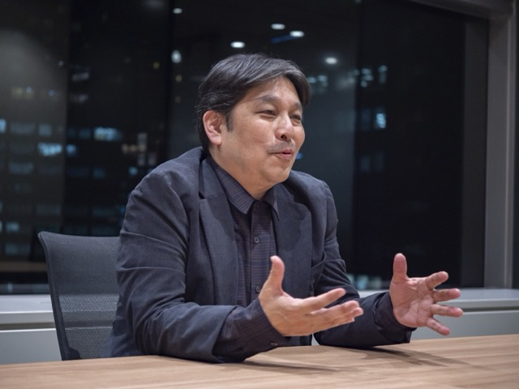
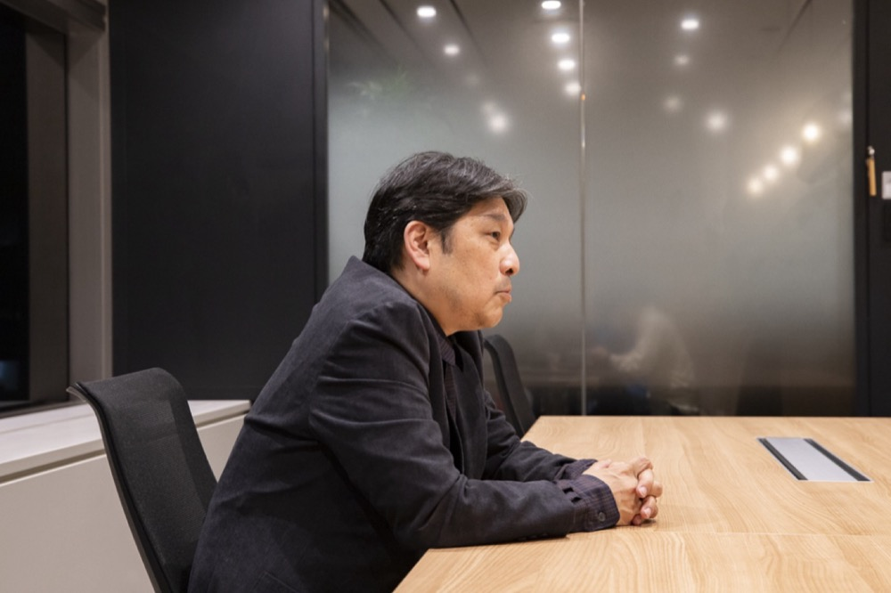
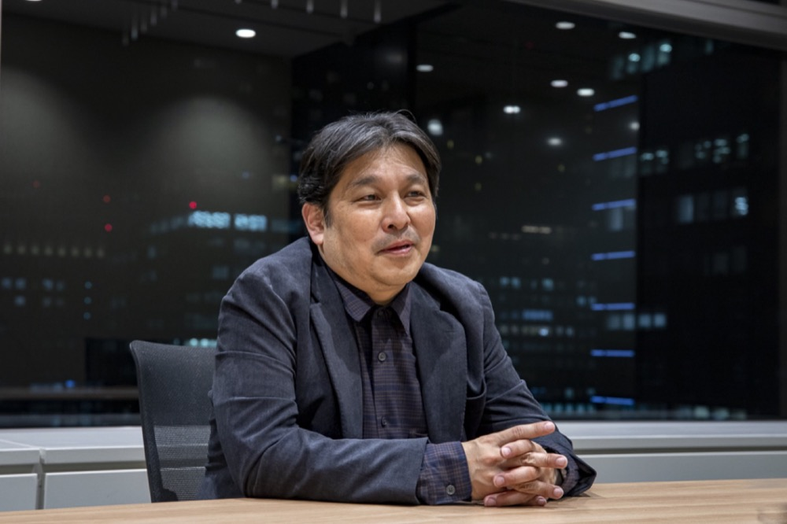

松戸が誇る世界規模で活躍中の鉄道コンサルティング会社
小倉 秀文Hidefumi Ogura
株式会社Shu Electricity and Railway Consultant 代表
東京電機大学大学院電気工学専攻博士課程（前期）修了。新卒で大手鉄道会社に入社、電気関係の設計・工事監理、設備保守等を経験した後、研究開発分野にてエネルギー有効活用に関する研究に従事。その後コンサルタント会社へ出向し、数件の円借款事業案件に参画。2019年11月に株式会社Shu Electricity and Railway Consultantを設立。現在は、海外の鉄道建設事業案件（数件）にサブコンサルタントとして従事するとともに電気関係事業の案件形成に携わっている。
企業サイトを見るTRACK 01
松戸が誇る世界規模で活躍中の鉄道コンサルティング会社

株式会社Shu Electricity and Railway Consultantは松戸市を拠点としている世界規模で活躍しているコンサルティング会社だ。国内外の都市計画の要となる「鉄道」分野のコンサルティングに強みを持ち、スリランカやフィリピンといったさまざまな国家プロジェクトに日本技術の導入を実現する専門家として携わっている。
日本で培った知見、そして技術に対する思いを胸に世界諸国を駆け回っている代表の小倉氏に話を伺った。
TRACK 02
「海外の技術者へ伝えたい」覚悟
大学院では電気工学を学んでいた傍ら、就職する以前から語学研修のために約1カ月アメリカに渡航したり、英会話に積極的に取り組むなど、海外交流や海外業務に興味を持っていた小倉代表。大手鉄道会社に入社後、現場の知見を積んだのち、海外案件を複数担当しているコンサルティング会社に出向する。当時担当していたのはJICA（国際協力機構）における海外コンサルティングの案件だったという。
出向先の会社で働くうち「海外でコンサルタント事業を行う方が自分には向いている」と感じるようになった小倉代表は、「さらに自らの経験を海外の技術者へ伝えたい」という使命感、そして当時のプロジェクトマネージャーなどの誘いもあり、2019年に退職し株式会社Shu Electricity and Railway Consultantを設立、本格的に海外プロジェクトに参画することとなる。

TRACK 03
重要なのは「誰にでもわかるように伝える」こと
海外でのプロジェクトではその国が今何を望んでいるのかを掴み、正確に形にすることを大事にしていると語る小倉代表。事業的な側面も踏まえて現実的に何ができるのか、どんな相手でもわかりやすく説明することが重要だと思って仕事に臨んでいるという。「コンサルタント業としては当たり前のことではあるものの、とくに文化の異なる方々と接することになる海外では、相手の意見を正しく理解できているかを非常に意識しています。」と小倉代表は語る。
また、日本では新技術を活用した様々な実証がなされているが何らかの理由で導入できないでいる技術が多数存在する。それらの技術を海外に紹介し、対象国における課題を解決すると同時に事業可能性を検討している。
鉄道事業としては、電気システムや鉄道運営に関わる内容を理解している日本人従事者が非常に少ない現実がある。小倉代表は、数少ない専門家の一人として活動しているのだ。
TRACK 04
異国の自治体との共同プロジェクトとは
新しい事業としてAgri-Voltaic事業というビジネスも展開中だ。Agri-Voltaicとはある土地に太陽光発電と農業を同時に活用するという意味を指す。現在小倉代表は、フィリピン国において太陽光発電設置予定用地が農地としても活用できることをアピールしており、現地のLGU（Local Goverment Unit；フィリピン国における地方自治体）と導入に向けた協議を実施しているところだという。また、発電した電力をどのように活用するのかについても議論がなされており、電力ネットワークが脆弱なケースを想定した事業可能性を検討している。小倉代表は鉄道事業のコンサルタント事業だけでなく、新たな事業としてAgri-Voltaic事業展開を次の柱として取り組めるようにしたいと考えているという。